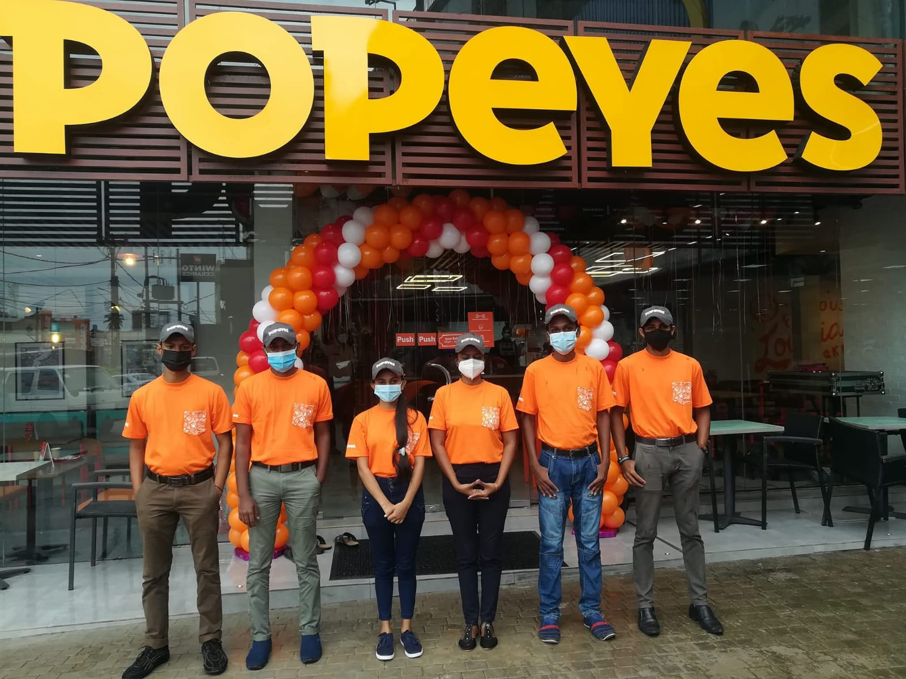
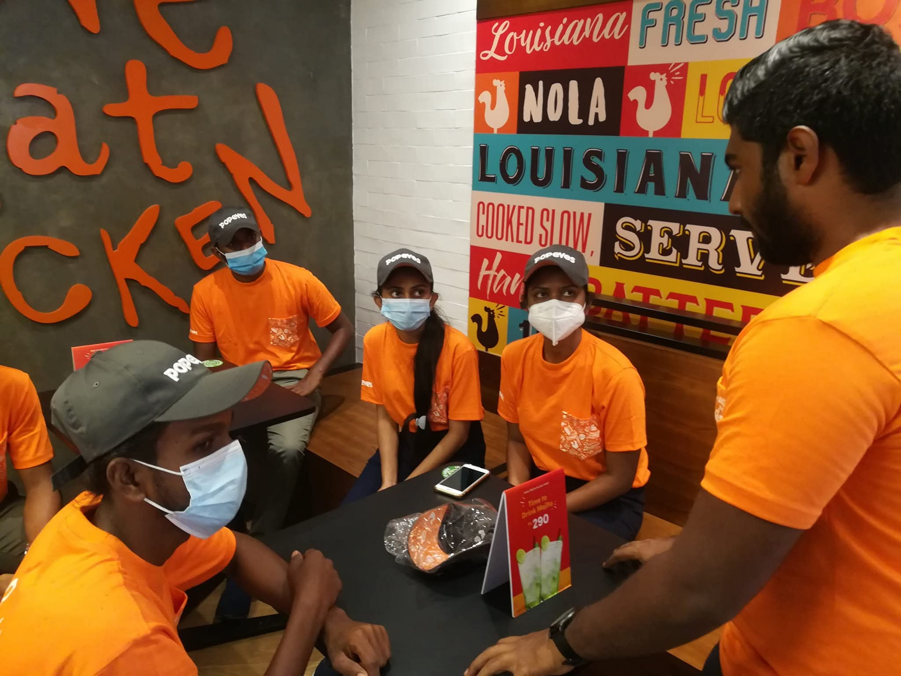

RNC Media Solutions partnered with Popeyes to create an impactful advertising campaign for the opening of their new branches.
We developed a comprehensive promotional strategy that included targeted digital marketing, in-store activations, and community engagement to generate buzz and drive foot traffic to the new locations. The campaign highlighted Popeyes' signature fried chicken and unique flavors, positioning the brand as a must-visit destination for food lovers.
Popeyes needed to create excitement and awareness for their new branch openings in a competitive fast-food market, ensuring high visibility and customer turnout on launch day.
We executed a multi-channel campaign featuring social media teasers, local partnerships, promotional events, and door-to-door promotions. Our team coordinated the creative assets, managed the rollout timeline, and optimized for maximum reach and engagement, resulting in successful openings with strong initial customer response.
Popeyes
New Branch Openings Promotion
Digital Marketing, Event Coordination, Creative Assets, Door-to-Door Promotions